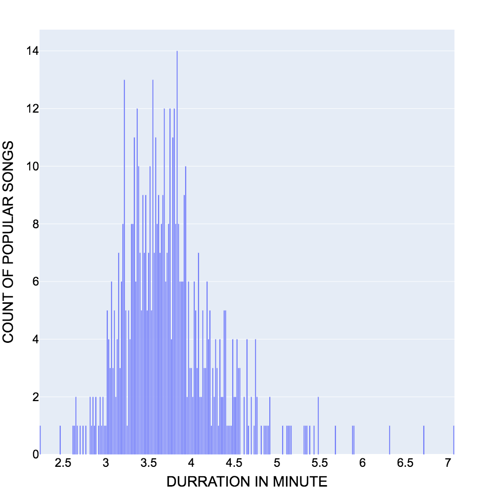

Duration seems to have multiple outliers. To measure the true average duration we can refer to the expected value measure which puts weights on each duration value based on how many songs fall under that duration. By doing so, the calculacted expected value for a popular song's duration is E(X) = 3 minutes and 44 seconds.